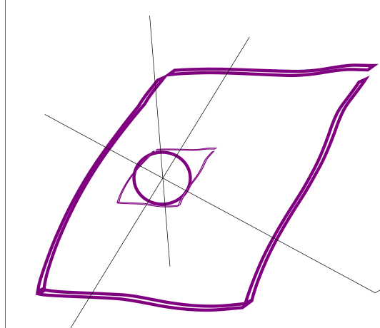

3. Theory
3.1. Total energy
The total energy in Kohn-Sham DFT is
\[E_\mathrm{total} = E_\mathrm{kin} + E_\mathrm{classical}[n_\mathrm{el}] - E_\mathrm{ion-self-interaction}+E_\mathrm{xc}[n_\mathrm{el}]\ ,\]
where \(E_\mathrm{classical}\) is the classical interaction energy involving ions and electrons (ion-ion, ion-electron and electron-electron), given by
\[E_\mathrm{classical}[n_\mathrm{el}] = \frac12\int\mathrm{d}\vec{r}\,\mathrm{d}\vec{r}'\frac{\left(n_\mathrm{el}(\vec{r})+n_\mathrm{ion}(\vec{r})\right)\left(n_\mathrm{el}(\vec{r}')+n_\mathrm{ion}(\vec{r}')\right)}{\left|\vec{r}-\vec{r'}\right|}\]
where \(n_\mathrm{el}\) is the electronic density and \(n_\mathrm{ion}\) is the charge density generated by the ions at positions \(\vec{R}_I\), namely
\[n_\mathrm{ion}(\vec{r})=\sum_I Z_I\delta(\vec{r} - \vec{R}_I)\ .\]
This density we split it in two parts
\[n_\mathrm{ion}(\vec{r})=n_\mathrm{LR}(\vec{r}) + n_\mathrm{SR}(\vec{r})\ .\]
The first part is
\[n_\mathrm{LR}(\vec{r})=\sum_I\frac{Z_I}{\left(\sqrt{2\pi}\sigma\right)^3}\exp{\left(-\frac12\left(\frac {\left|\vec{r} - \vec{R}_I\right|}{\sigma}\right)^2\right)}\]
that produces a long range potential. The second part produces a short term potential that will be different for the interaction with the ions and electrons (the non-local pseudopotential).
Using this split the second term of the total energy can be written as
\[E_\mathrm{classical}[n_\mathrm{el}] =\frac12\int\mathrm{d}\vec{r}\,\mathrm{d}\vec{r}'\frac{\left(n_\mathrm{el}(\vec{r})+n_\mathrm{LR}(\vec{r})\right)\left(n_\mathrm{el}(\vec{r}')+n_\mathrm{LR}(\vec{r}')\right)}{\left|\vec{r}-\vec{r'}\right|}
+ \frac12\int\mathrm{d}\vec{r}\,\mathrm{d}\vec{r}'\frac{n_\mathrm{SR}(\vec{r})n_\mathrm{SR}(\vec{r}')}{\left|\vec{r}-\vec{r'}\right|}
+ \int\mathrm{d}\vec{r}\,\mathrm{d}\vec{r}'\frac{n_\mathrm{SR}(\vec{r})n_\mathrm{LR}(\vec{r}')}{\left|\vec{r}-\vec{r'}\right|}
+ \int\mathrm{d}\vec{r}\,\mathrm{d}\vec{r}'\frac{n_\mathrm{SR}(\vec{r})n_\mathrm{el}(\vec{r}')}{\left|\vec{r}-\vec{r'}\right|}\]
rearranging
\[E_\mathrm{classical}[n_\mathrm{el}]=\frac12\int\mathrm{d}\vec{r}\,\mathrm{d}\vec{r}'\frac{\left(n_\mathrm{el}(\vec{r})+n_\mathrm{LR}(\vec{r})\right)\left(n_\mathrm{el}(\vec{r}')+n_\mathrm{LR}(\vec{r}')\right)}{\left|\vec{r}-\vec{r'}\right|}
+ \frac12\int\mathrm{d}\vec{r}\,\mathrm{d}\vec{r}'\frac{n_\mathrm{SR}(\vec{r})(n_\mathrm{SR}(\vec{r}')+n_\mathrm{LR}(\vec{r}'))}{\left|\vec{r}-\vec{r'}\right|}
+ \frac12\int\mathrm{d}\vec{r}\,\mathrm{d}\vec{r}'\frac{n_\mathrm{SR}(\vec{r})n_\mathrm{LR}(\vec{r}')}{\left|\vec{r}-\vec{r'}\right|}
+ \int\mathrm{d}\vec{r}\,\mathrm{d}\vec{r}'\frac{n_\mathrm{SR}(\vec{r})n_\mathrm{el}(\vec{r}')}{\left|\vec{r}-\vec{r'}\right|}\]
The first term of this last identity we can simplify it by defining \(n_\mathrm{tot}=n_\mathrm{LR}+n_\mathrm{el}\), such that it becomes
\[\frac12\int\mathrm{d}\vec{r}\,\mathrm{d}\vec{r}'\frac{n_\mathrm{tot}(\vec{r})n_\mathrm{tot}(\vec{r}')}{\left|\vec{r}-\vec{r'}\right|}\ .\]
Since the integral of \(n_\mathrm{tot}\) is charge of the system, there is no problem for neutral periodic systems.
The second term of the identity is the short range interaction of the ions that we can calculate directly (THIS IS WRONG)
\[\frac12\int\mathrm{d}\vec{r}\,\mathrm{d}\vec{r}'\frac{n_\mathrm{SR}(\vec{r})n_\mathrm{SR}(\vec{r}')}{\left|\vec{r}-\vec{r'}\right|}=\frac12\sum_{I\,J}Z_I Z_J v^{(I)}_{SR}\left(\left|\vec{R}_I - \vec{R}_J\right|\right)\ ,\]
this last sum does not include the \(I\neq J\) term to avoid self-interaction.
The third term is the interactions between the short range and long range densities. Because they are both localized, we will neglect it for the moment.
The last term is the interaction of the short range part of the ionic interaction and the electronic density, which includes the non-local pseudopotentials. We will write it as
\[\int \mathrm{d}\vec{r} v_\mathrm{ext-SR}n_\mathrm{el}(\vec{r})\ .\]
We now calculate the potential associated to the classical interaction as
\[ \begin{align}\begin{aligned}\frac{\delta E_\mathrm{classical}}{\delta n_\mathrm{el}(\vec{r})}=\int\mathrm{d}\vec{r}\frac{n_\mathrm{tot}(\vec{r}')}{\left|\vec{r}-\vec{r}'\right|} + v_\mathrm{ext-SR}(\vec{r})\ =v_\mathrm{tot}(\vec{r}) + v_\mathrm{ext-SR}(\vec{r})\ .\\E_\mathrm{kin} = \sum_i\varepsilon_i - \int\mathrm{d}\vec{r}\,n_\mathrm{el}v_\mathrm{tot}(\vec{r}) -\int\mathrm{d}\vec{r}\,n_\mathrm{el}v_\mathrm{ext-SR}(\vec{r}) - \int\mathrm{d}\vec{r}\,n_\mathrm{el}v_\mathrm{xc}(\vec{r})\end{aligned}\end{align} \]
3.2. Pseudopotential application
http://www.tcm.phy.cam.ac.uk/~jry20/gipaw/tutorial_pp.pdf
In real space:
\[(\hat V_{nl}\phi)(r) = \sum_I\int\,dr\,d_I \beta_I(\vec{r} - \vec{R}_I)\beta_I(\vec{r}'- \vec{R}_I)\phi(r')\]
with \(\beta(r)=0\) for \(r > r_c\).
\[(\hat V_{nl}\phi)(\vec{G}) = \sum_I \int\int d\vec r'd\vec r d_I \beta_I(\vec r-\vec R_I)\beta_I(\vec r-\vec R_I)\phi(\vec r') e^{-i\vec r\cdot\vec G}\]
\[ \begin{align}\begin{aligned}\beta_I(\vec r)=\int d\vec G' \tilde\beta_I(\vec G') e^{+i\vec r\cdot\vec G'}\\\tilde\beta_I(\vec G) = \int d\vec r'\beta_I(\vec r') e^{-i\vec r'\cdot \vec G}\end{aligned}\end{align} \]
3.3. k-points
\[\nabla^2\phi(r) = \nabla^2\left(\exp(i\vec{k}\cdot{\vec{r}})u(r)\right) =\exp(i\vec{k}\cdot{\vec{r}})\left(\nabla^2 + 2i\vec{k}\cdot\vec{\nabla} - \vec{k}\cdot\vec{k}\right)u(r)\]
\[\nabla \rightarrow i\vec{g}\]
\[\left(-g^2 - 2\vec{k}\cdot\vec{g} - k^2\right)u(r)\]
\[\hat{v}_{nl}\phi(\vec{r}) = \int d\vec{r}' v_{nl}(\vec{r}, \vec{r}')\phi(\vec{r})\]
\[\hat{v}_{nl}f(\vec{r}) = \sum_{lm}\epsilon_{lm}\beta_{lm}(\vec{r})\int d\vec{r}' \beta_{lm}(\vec{r}')\phi(\vec{r}')\]
\[H\phi(r) = \varepsilon\phi(r)\]
\[\phi(r) = \exp(i\vec{k}\cdot\vec{r}) \, u(r)\]
\[\exp(-i\vec{k}\cdot\vec{r}) H\phi(r) = \varepsilon\exp(-i\vec{k}\cdot\vec{r})\phi(r)\]
\[H_{\vec{k}} u(r) = \varepsilon u(r)\]
\[H_{\vec{k}} = \exp(-i\vec{k}\cdot\vec{r}) H \exp(i\vec{k}\cdot\vec{r})\]
Generalized coordinates
\[\partial_\alpha\partial^\alpha\phi(r) = \partial_\alpha\partial^\alpha\left(\exp(ik_\beta r^\beta)u(r)\right) =\exp(ik_\beta r^\beta)\left(\partial_\alpha\partial^\alpha + 2ik_\alpha\partial^\alpha - k_\alpha k^\alpha\right)u(r)\]
3.5. Electric fields and gauges
The electric field is defined from the potentials A and V
\[\vec{E} = -\frac{\partial\vec{A}}{\partial t} -\vec{\nabla}V\]
3.6. Coordinates
The basis is \(a_i^j\), we define the reciprocal basis \(b_i^j\) such that
\[a_i^jb_j^k = \delta_i^k \ .\]
Given a vector \(v^i = c^ja_j^i\) with \(c^j = b_i^jv^i\).
3.6.1. Mini cell circumscribing a sphere

3.7. Preconditioner
/*
// A better version by Zhou, Chelikowsky, Gao and Zhou, Commun. Comput. Phys. 18 167 (2015)
// I won't use it for the moment, since it doesn't seem to
// change the results and it might have numerical issues. XA
auto num = ((((32.0*x + 48.0)*x + 72.0)*x + 108.0)*x + 162)*x + 243.0;
auto den = (((((64.0*x + 32.0)*x + 48.0)*x + 72.0)*x + 108.0)*x + 162)*x + 243.0;
*/
3.8. Exact factorization
The solution of the complete electron-nuclear wave function can be written as a single product
\[\Psi(r,R,t)=\chi(R,t)\phi_R(r,t)\]
Nuclear wave function \(\chi\): exact time-dependent nuclear density, and where \(\phi_R(r,t)\) satisfies the normalization condition
\[\int |\phi_R(r,t)|^2dr =1\]
for any fixed nuclear configuration, \(R\) at any time \(t\).
The wave function \(\phi_R(r,t)\) and \(\chi(R,t)\) satisfy
\[\left(H_{el}(r,R,t)-\epsilon(R,t)\right)\phi_R(r,t)=i\partial_t\phi_R(r,t)\]
3.8.1. Nuclear EOM
\[i\hbar\frac{\partial \chi(R,t)}{\partial t}=\left(\sum_v \frac{[-i\hbar\nabla_v+A_v(R,t)]^2}{2M_v}+\epsilon(R,t)\right)\chi(R,t)\]
where a potential energy surface \(\epsilon\)
\[\epsilon(R,t)=\left<\phi_R(t)|H_{BO}+U^{coup}_{en}-i\hbar\partial_t|\phi_R(t)\right>\]
where
\[H_{BO}=T_e+W_{ee}(r)+V_{en}(r,R)+W_{nn}(R)\]
and a vector potential \(A\)
\[A_v(R,t)=\left<\phi_R(t)|-i\hbar\nabla_v\phi_R(t)\right>_r\]
The nuclear equation of motion can be written in the polar form, \(\chi(R,t)=|\chi(R,t)|e^{i/\hbar S(R,t)}\). Then the real part of the nuclear EOM is
\[\frac{\partial S}{\partial t}=-\sum_v \frac{[\nabla S(R,t)+A(R,t)]^2}{2M_v}-\epsilon(R,t)+\hbar^2\sum_v\frac{1}{2M_v}\frac{\nabla^2|\chi(R,t)|}{|\chi(R,t)|}\]
a Hamilton-Jacobi equation.
3.8.2. Electronic equation of motion
\[i\hbar\partial_t\phi_R(r,t)=\left(H_{BO}(r,R)+U^{coup}_{en}[\phi_R,\chi]-\epsilon(R,t)\right)\phi_R(r,t)\]
where the electron-nuclear correlation operator is
\[U^{coup}_{en}[\phi_R,\chi]=\sum_v\frac{1}{M_v}\left[\frac{[-i\hbar\nabla_v-A_v(R,t)]^2}{2}+\left(\frac{-i\hbar\nabla_v\chi}{\chi}+A_v(R,t)\right)\cdot \left(-i\hbar\nabla_v-A_v(R,t)\right)\right]\]
Here, \(\sum_v\frac{1}{M_v}\left[\frac{[-i\hbar\nabla_v-A_v(R,t)]^2}{2}\right]\) generates a potential corresponding to the diagonal BO correction(DBOC).
\[\frac{-i\hbar\nabla_v\chi}{\chi}+A_v(R,t)=P_{cl}-\frac{i\hbar\nabla|\chi|}{|\chi|}.\]
Here \(P_{cl}\) is a classical momentum provides Ehrenfest equation with trajectories, and \(-\frac{i\hbar\nabla|\chi|}{|\chi|}\) is a quantum momentum provides additional correlation toward quantum (de)coherence.
The main step to derive MQC is to introduce classical nuclear trajectories \(R^I(t)\), where the electronic wave function \(\phi_R^I(r,t)\) varies along \(R^I(t)\), where \(I\) is the index for the classical nuclear trajectory. Two approximation are applied:
Neglect a quantum potential \(\frac{\nabla^2|\chi(R,t)|}{|\chi(R,t)|}\)
Neglect the first term of \(U_{en}\)
As a result, we obtained the coupled equation:
\[F_v^l(t)=-\left<\phi_R^I(t)|\nabla_v H_{BO}^I| \phi_R^I(t) \right>_r-\sum_u\frac{2P^I_u}{\hbar M_u}\cdot \left(A_u^I(t)A_v^I(t)-\hbar^2\mathrm{Re}\left<\nabla_u\phi_R^l|\nabla_v\phi_R^I(t)\right>_r\right)\]
for a classical nuclear trajectory and
\[i\hbar \frac{d}{dt}\phi_R^I(r,t)=H_{BO}\phi_R(r,t)-\sum_v\frac{iP_v^I(t)}{M_v}\cdot\left(A_v(t)+i\hbar\nabla_v\right)\phi_R(r,t)\]
for the electronic wave function along the nuclear trajectory, where \(P_v=-\hbar\frac{\nabla_v|\chi|}{|\chi|}\) is the quantum momentum. Here, the superscript \(I\) indicates the corresponding quantity that is evaluated at the \(I\) classical nuclear trajectory. In practice, we need approximation for \(P_v\) and \(A_v\).
Ehrenfest dynamics based on exact factorization really ehrenfest?
https://doi.org/10.1063/5.0084493
3.9. Self-consistency acceleration
Starting from a density \(n\), we want to calculate \(\Delta n\) such that \(E[n + \Delta n]\) is minimal. The energy is
\[\begin{split}E &= <\phi|H[n + \Delta n]|\phi>\\
&= <\phi|H[n]|\phi> + \int \mathrm{d}\vec{r}f_\mathrm{hxc}(\vec{r})\Delta n(\vec{r})|\phi> + <\phi|H[n + \Delta n]|\phi>\end{split}\]
and its derivative
\[\frac{\delta E}{\delta \Delta n(\vec{r})} = <\phi|H[n] + \int \mathrm{d}\vec{r}f_\mathrm{hxc}\Delta n]|\phi> + <\phi|H[n + \Delta n]|\phi>\]
nonsense
\[\begin{split}E &= \int \mathrm{d}\vec{r}\,(n(\vec{r}) + \Delta n(\vec{r}))V_\mathrm{eff}[n(\vec{r}) + \Delta n(\vec{r})](\vec{r})\\
&= \int \mathrm{d}\vec{r}\,(n(\vec{r}) + \Delta n(\vec{r}))V_\mathrm{eff}[n(\vec{r})](\vec{r}) + \int \mathrm{d}\vec{r}\mathrm{d}\vec{r'}\,(n(\vec{r}) + \Delta n(\vec{r}))\frac{\delta V_\mathrm{eff}[n(\vec{r})]}{\delta n(\vec{r'})}\Delta n(\vec{r'}) + 0 \\
&= V_\mathrm{eff}[n(\vec{r})](\vec{r}) + \int \mathrm{d}\vec{r'}\,n(\vec{r'})\frac{V_\mathrm{eff}[n(\vec{r'})]}{\delta n(\vec{r})}\end{split}\]
\[\begin{split}E &= \int \mathrm{d}\vec{r}\,n(\vec{r})V[n(\vec{r})](\vec{r})\\
&= \int \mathrm{d}\vec{r}\,(n_\mathrm{gs}(\vec{r}) + \delta n(\vec{r}))V_\mathrm{eff}[n_\mathrm{gs}(\vec{r}) + \delta n(\vec{r})](\vec{r})\\
&= \int \mathrm{d}\vec{r}\,n_\mathrm{gs}(\vec{r})V_\mathrm{eff}(\vec{r})[n_\mathrm{gs}(\vec{r}) + \delta n(\vec{r})]+\int \mathrm{d}\vec{r}\,\delta n(\vec{r})V_\mathrm{eff}(\vec{r})[n_\mathrm{gs}(\vec{r}) + \delta n(\vec{r})]\\
&= \int \mathrm{d}\vec{r}\,n_\mathrm{gs}(\vec{r})V_\mathrm{eff}[n_\mathrm{gs}(\vec{r})](\vec{r})+\int \mathrm{d}\vec{r}\mathrm{d}\vec{r}'\,n_\mathrm{gs}(\vec{r})\frac{V_\mathrm{eff}[n_\mathrm{gs}(\vec{r})](\vec{r})}{\delta n(\vec{r})}\delta n(\vec{r})+\int \mathrm{d}\vec{r}\,\delta n(\vec{r})V_\mathrm{eff}(\vec{r})[n_\mathrm{gs}(\vec{r})]\end{split}\]
3.10. Magnetization
The magnetization is defined as
\[\vec{m}(\vec{r}, t) = \sum_{ss',n}f_n\varphi^*_{s'\,n}(\vec{r}, t)\vec{\sigma}_{s's}\varphi_{sn}(\vec{r}, t)\]
Given the density
\[n_{ss'}(\vec{r}, t) = \sum_{n}f_n\varphi^*_{s\,n}(\vec{r}, t)\varphi_{s'\,n}(\vec{r}, t)\]
with the property
\[n_{ss'}(\vec{r}, t) = n^*_{s's}(\vec{r}, t)\]
We can use the Pauli matrices to derive the magnetization from the density:
\[\begin{split}m_x(\vec{r}, t) &= \sum_{n}f_n\left[\varphi^*_{0n}(\vec{r}, t)\varphi_{1n}(\vec{r}, t) + \varphi^*_{1n}(\vec{r}, t)\varphi_{0\,n}(\vec{r}, t)\right]\\
&= n_{01}(\vec{r}, t) + n_{10}(\vec{r}, t)\\
&= 2\Re\left[n_{01}(\vec{r}, t)\right]\end{split}\]
\[\begin{split}m_y(\vec{r}, t) &= -i\sum_{n}f_n\left[\varphi^*_{0n}(\vec{r}, t)\varphi_{1n}(\vec{r}, t) - \varphi^*_{1n}(\vec{r}, t)\varphi_{0\,n}(\vec{r}, t)\right]\\
&= -i\left[n_{01}(\vec{r}, t) - n_{10}(\vec{r}, t)\right]\\
&= 2\Im\left[n_{01}(\vec{r}, t)\right]\end{split}\]
\[\begin{split}m_z(\vec{r}, t) &= \sum_{n}f_n\left[\varphi^*_{0\,n}(\vec{r}, t)\varphi_{0\,n}(\vec{r}, t) - \varphi^*_{1\,n}(\vec{r}, t)\varphi_{1n}(\vec{r}, t)\right]\\
&=n_{00}(\vec{r}, t)-n_{11}(\vec{r}, t)\end{split}\]

{kind=link}